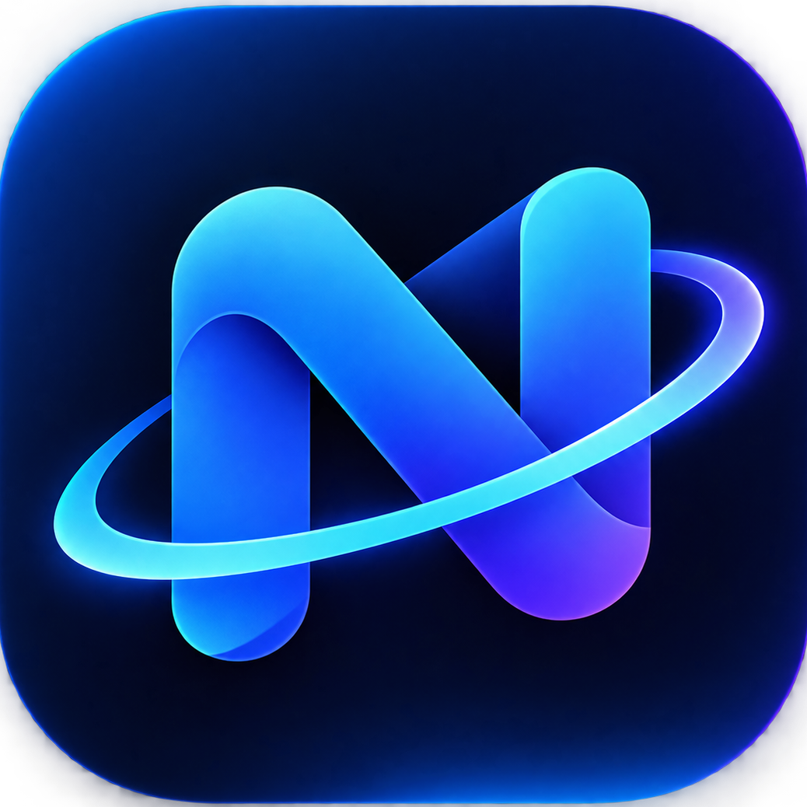

Floating, auto-hiding dock
Slides up when you reach the bottom edge and out of the way when you don't. Or keep it always visible.

DESKTOP · WINDOWS 11 · FREE
NovaDock replaces the Windows 11 taskbar with a floating, auto-hiding dock: live window previews, magnified icons, and a status pill with volume, network, clock and tray icons.
Requires Windows 11 (64-bit)
FEATURES
Everything you use every day, a hover away.
Slides up when you reach the bottom edge and out of the way when you don't. Or keep it always visible.
Icons grow smoothly under your cursor. Tune the size and reach to taste.
Hover an app to see live thumbnails of every open window. Click to jump to one, or close it right there.
Right-click any app for its own tasks and recent items, plus pin, end task and close. Right-click Start for the full power menu.
Clock and date, volume (scroll to adjust), network status and the Notification Center in one tidy pill.
Hidden tray icons live in a popup, with full left, right and middle click support.
Colours, opacity, corner radius, sizes, spacing and animation, all with a live preview before you save.
A dock on every display, and it steps aside for fullscreen apps and games.
Pin your favourite apps, drag to rearrange, and see at a glance which windows are focused, minimized or need attention.
SAFETY
NovaDock changes how your taskbar works, so here is exactly what it does.
NovaDock hides the Windows taskbar while it runs. A separate watchdog process restores it even if NovaDock crashes or is force-closed, and uninstalling restores it too.
NovaDock collects no personal data. Its only network activity is checking GitHub for updates, and updates are verified with a SHA-256 checksum before they run.
Because NovaDock hides the taskbar and handles tray icons, Windows SmartScreen or your antivirus may show a warning for a new independent app. If it does, you can verify your download with the checksum below and follow the steps in FAQ for help.
GET NOVADOCK
Loading the latest release…
SHA-256:
Verify in PowerShell: Get-FileHash .\NovaDock-setup.exe
Couldn't load the latest release right now.
Windows 11 (64-bit) only · Free · All releases ↗
FAQ
New independent apps haven't built up reputation with Microsoft yet, so Windows shows this warning for NovaDock's installer. It is expected. To continue:
Get-FileHash .\NovaDock-setup.exe in PowerShell).If you don't see "Run anyway", right-click the downloaded file, choose Properties, tick Unblock at the bottom, click OK, and run it again.
No. NovaDock is built for Windows 11. Windows 10 handles volume, network, notifications and tray icons differently, so only the basic dock would work there.
Right-click the NovaDock tray icon and choose Close NovaDock, or just uninstall it. If NovaDock ever crashes or is ended in Task Manager, the watchdog restores your taskbar automatically.
Yes, NovaDock is free to download and use.
No. It doesn't send telemetry or personal data anywhere. It checks GitHub for new versions and keeps small diagnostic logs on your own PC.
NovaDock hides the Windows taskbar and intercepts tray icon messages so it can show them in its own pill. Security software can be cautious about that behaviour in a new app. You can compare the SHA-256 on this page with your download to confirm it's untouched.
NovaDock checks for updates in the background. It always asks before installing, and verifies the download's checksum first.